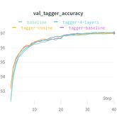
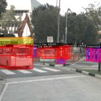

projects

Neural scene representation
Deep neural networks are used to generate 3D environments from small set of images. The input to the model is a small set of images annotated with the camera poses called the context and a query pose. The model then renders the image from the query pose. The training code is written in both TensorFlow 2 and PyTorch and runs on 8 NVIDIA V100 GPUs. The research is conducted on CIIRC, CTU with Erik Derner and prof. Robert Babuška.CV, TensorFlow 2, PyTorch

Deep RL PyTorch
https://github.com/jkulhanek/deep-rl-pytorch
The project is a library of deep reinforcement learning (DRL) algorithms written for PyTorch. Some of the implemented algorithms are: PAAC, A3C, PPO, DQN, Rainbow. The library is primarily used in other projects.DRL, PyTorch

LemmaTag
https://github.com/jkulhanek/lemmatag
Implementation of SoTA lemmatizer and tagger achieving 98.75% and 96.67% accuracies respectively on UD Treebank. The source code is written for TensorFlow 2. Pre-trained models are available for Czech language.NLP, TensorFlow 2

DMHouse
https://github.com/jkulhanek/dmhouse
The DMHouse project is a fork of DMLab 3D environment published by DeepMind. It implements new environments which resemble office rooms. Furthermore, it has a Python gym interface allowing it to be used directly by DRL algorithms.DRL, Bazel

AuGPT task-oritented dialogue system
https://github.com/ufal/augpt
AuGPT is a task-oriented dialogue system based on the SOLOIST architecture. It uses massive data augmentation by paraphrasing the original dataset using back-translations. The code is written for PyTorch and checkpoints are available for MultiWOZ 2.0, MultiWOZ 2.1, TaskMaster-1 and Schema-Guided Dialogue datasets. The project was developed in a collaboration with Charles University and the model participated in the DSTC9 competition.NLP, PyTorch

Real-world visual navigation using DRL
https://github.com/jkulhanek/robot-visual-navigation
In this project, a prior deep reinforcement learning visual navigation method is modified to be applied directly to a real-world mobile robot. The method is evaluated in a real office room. The research was conducted on CIIRC, CTU with Erik Derner and prof. Robert Babuška.DRL, PyTorch

Visual navigation using DRL
https://github.com/jkulhanek/a2cat-vn-pytorch
The goal of this project was to design a deep reinforcement learning (DRL) agent able to navigate in a simulated environment using an RGB camera only. The navigation goal is also given as an RGB image. A new method called A2CAT-VN was proposed, which is based on the PAAC algorithm. It uses auxiliary tasks which improve the convergence properties. The research was conducted on CIIRC, CTU with Erik Derner and prof. Robert Babuška.DRL, PyTorch

Object detection on KITTI-360
This project focused on the object detection used in autonomous cars. State-of-the-art (at that time) methods were reimplemented, including RetinaNet and Mask R-CNN. Effective tranining pipelines were developed to efficiently train the object detection model. The code was written in TensorFlow 1, but, unfortunatelly, is not publicly available.object detection, TensorFlow 1